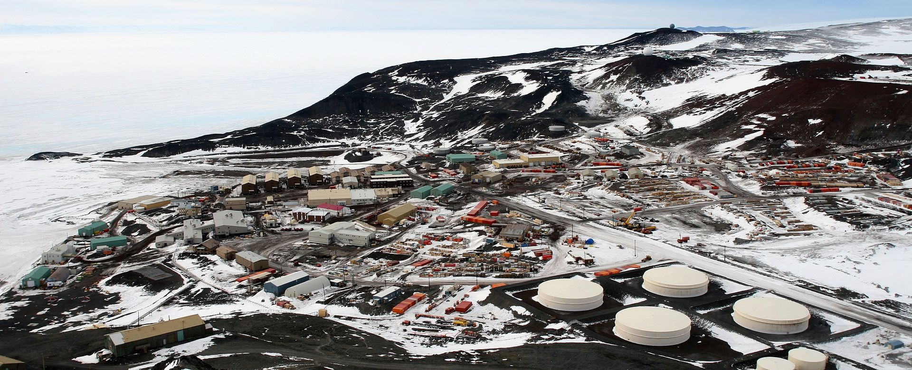

McMurdo Station
The McMurdo Station is a United States Antarctic research station on the south tip of Ross Island, which is in the New Zealand–claimed Ross Dependency on the shore of McMurdo Sound in Antarctica. It is operated by the United States through the United States Antarctic Program, a branch of the National Science Foundation. The station is the largest community in Antarctica, capable of supporting up to 1,258 residents, and serves as one of three year-round United States Antarctic science facilities. All personnel and cargo going to or coming from Amundsen–Scott South Pole Station first pass through McMurdo. By road, McMurdo is 3 kilometres (1.9 mi) from New Zealand's smaller Scott Base.
